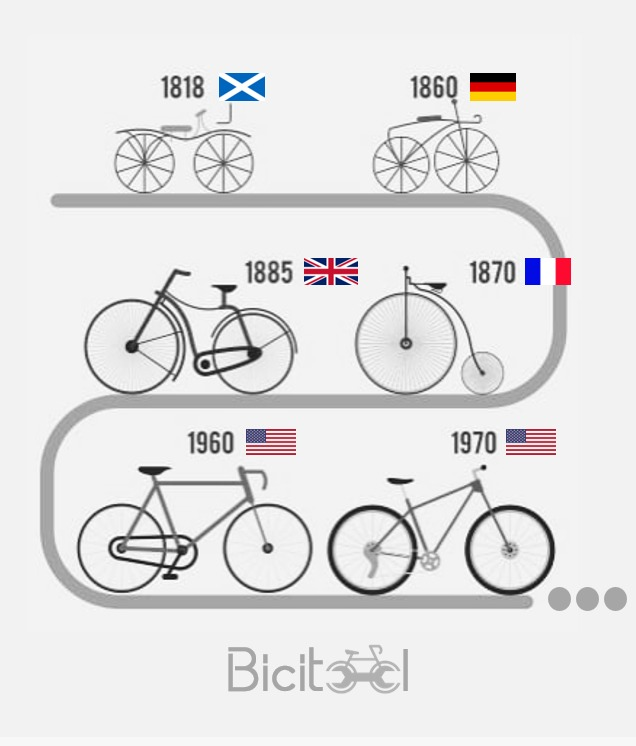

HISTORY

It started as a game What is clear
is that the bicycle is the result of the evolution of a toy, specifically the Célérifère, which was a solid wooden chassis in the shape of an animal and with two wheels with which you could only go in a straight line. . As its name indicates, this toy was born in France and specifically in Paris in 1791 in the middle of the French Revolution at the hands of Count Mede de Sivrac. Sivrac's brilliant idea was to place the two wheels in tandem instead of side by side as had been done since ancient times. This toy of rich children and that the English plagiarized creating their own Dandy Horse remained unchanged for 20 years before someone put a device to change direction.
It will be in 1817 the German engineer Karl Von Drais who applying the engineering of the time applied to vehicles will adapt a direction. These modifications would give rise to the so-called draisian which, however, even looking more like current bicycles, was handled like a scooter, that is, propelled by dragging the feet on the ground. It will take about 20 years for the Scottish Kirkpatrick Macmillan in 1839 to incorporate crankshafts that, through two connecting rods, would allow the rear wheel to rotate in a rudimentary way.